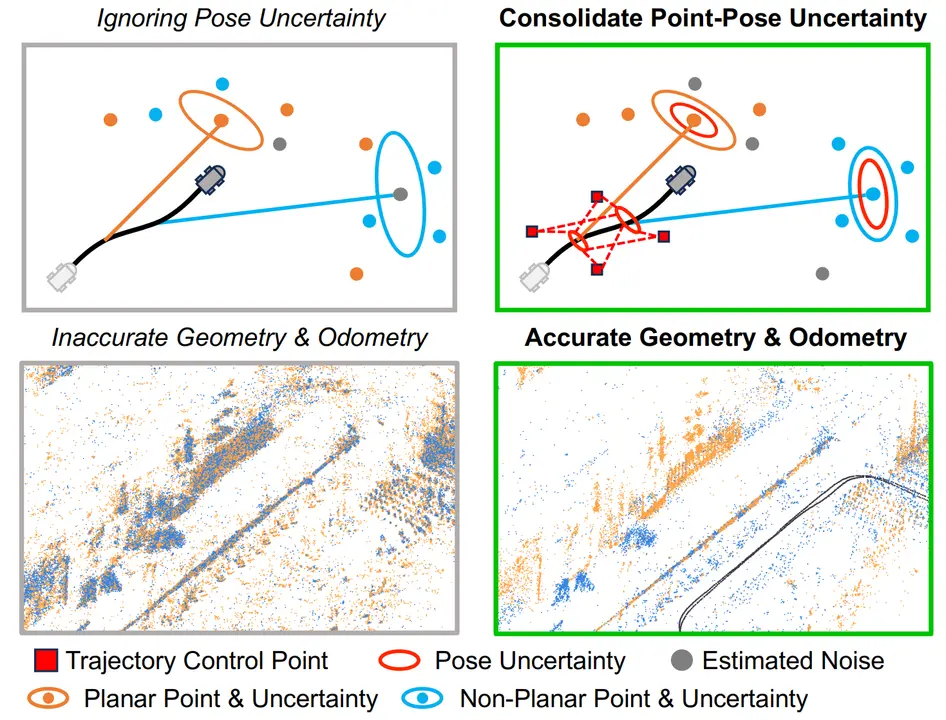
IEEE Robotics and Automation Letters (RA-L), 2026
Publications

IEEE Robotics and Automation Letters (RA-L), 2026
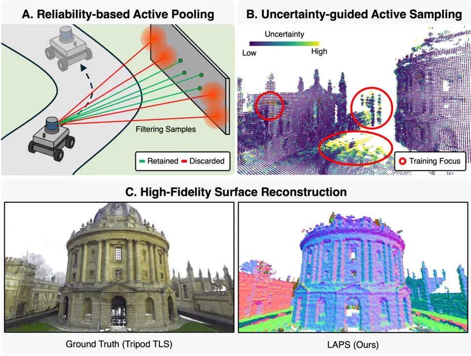
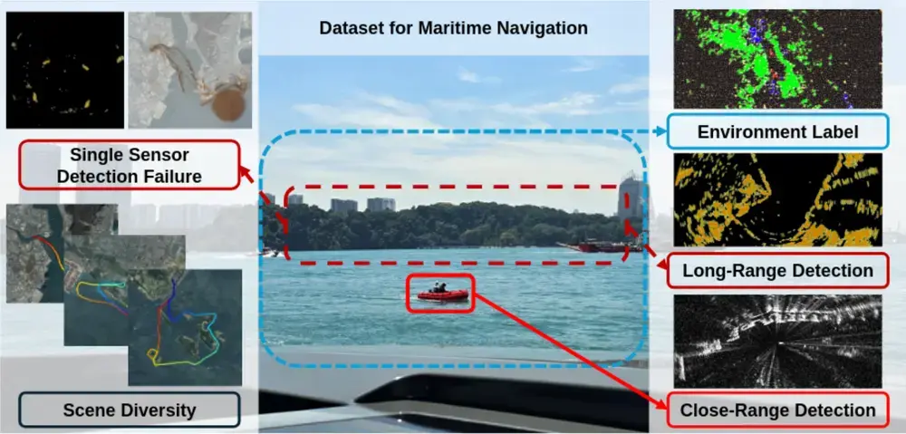
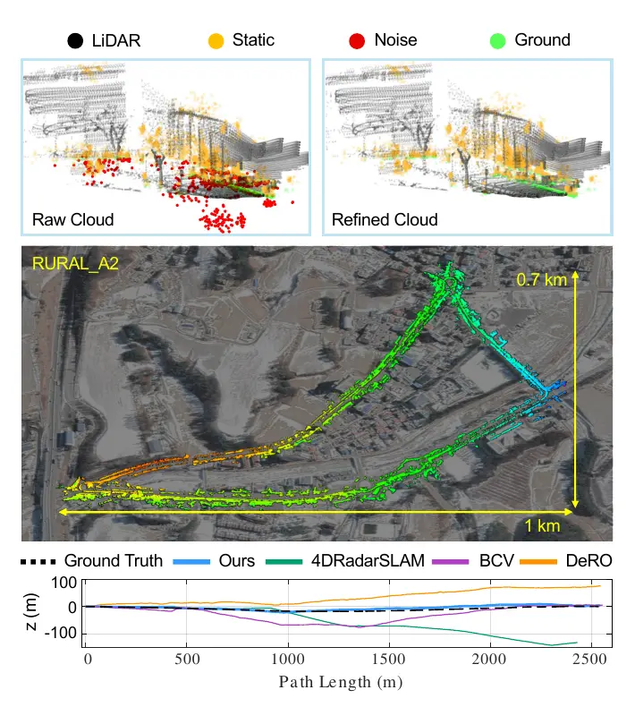
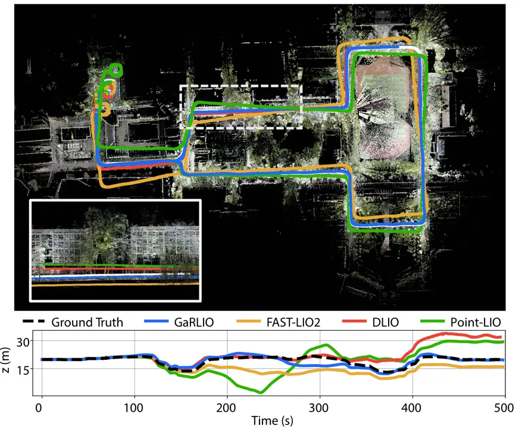
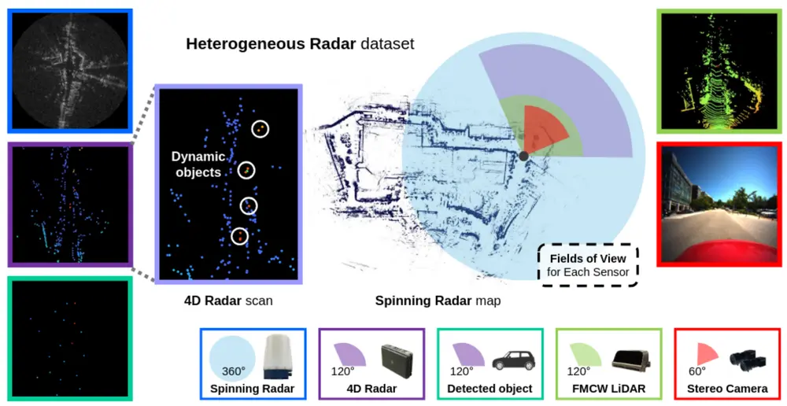
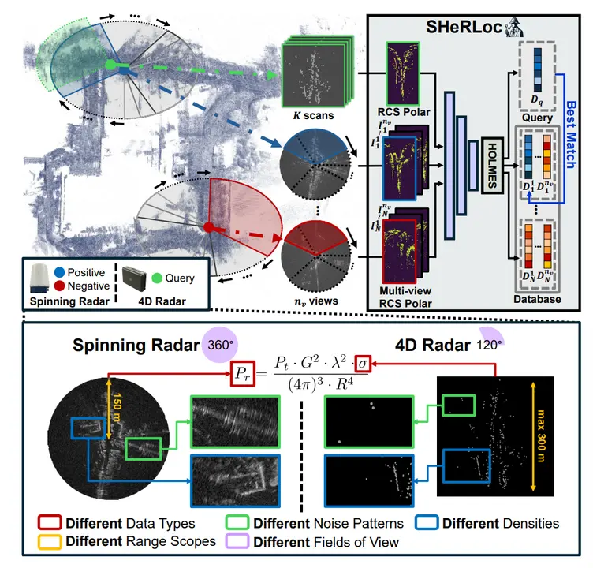
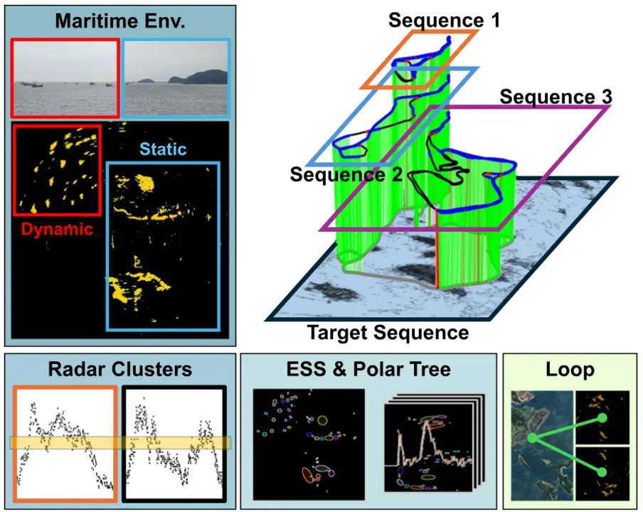
IEEE Robotics and Automation Letters (RA-L), 2025
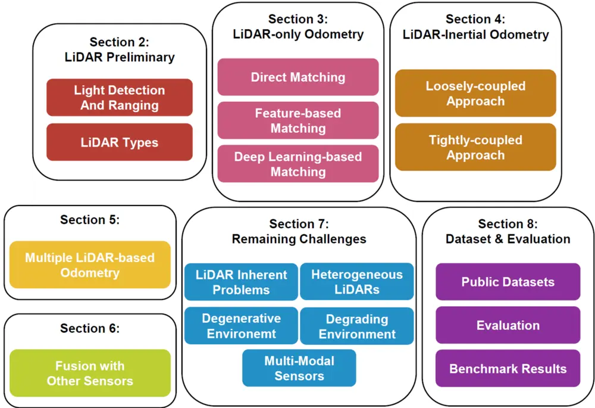
Intelligent Service Robotics, 2024
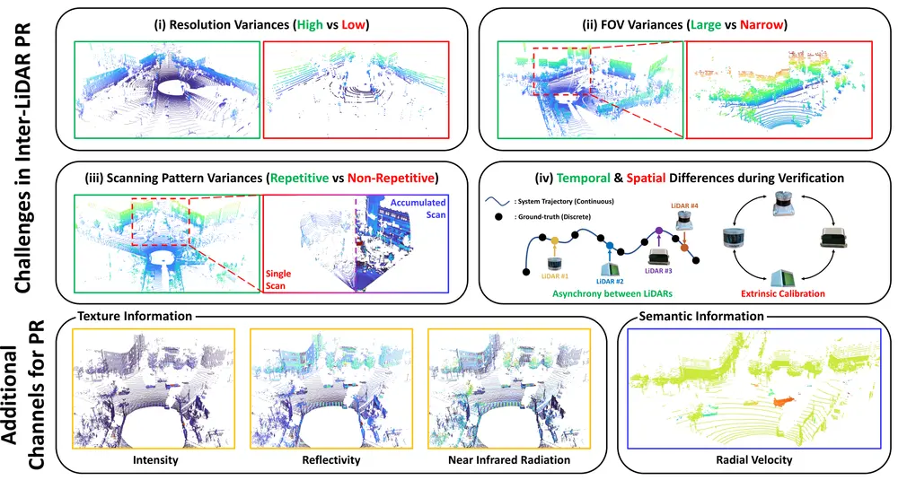
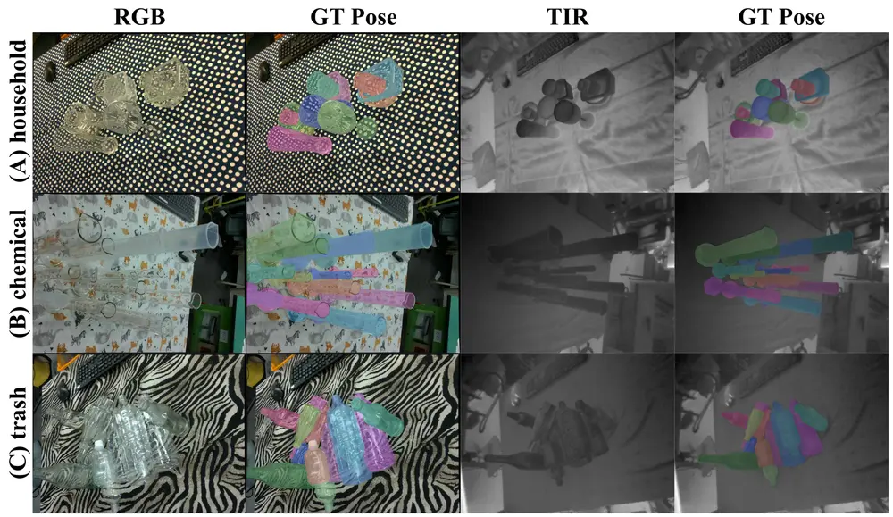
Journal of Korea Robotics Society (JKROS), 2023